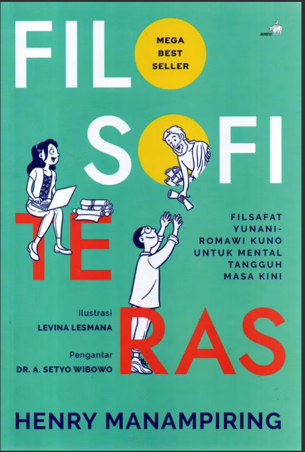
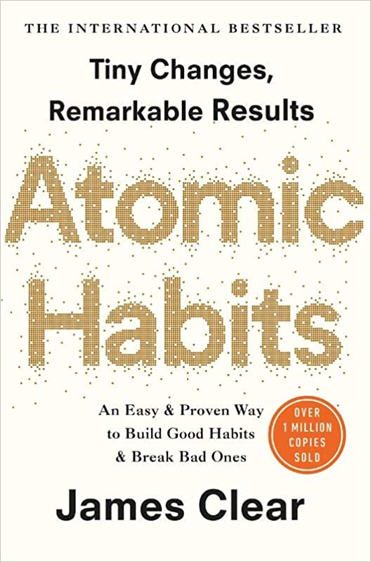
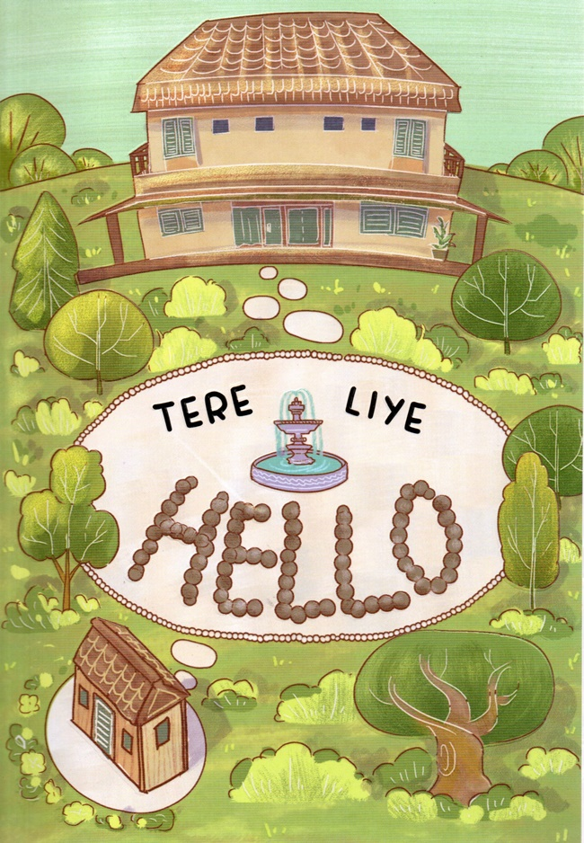
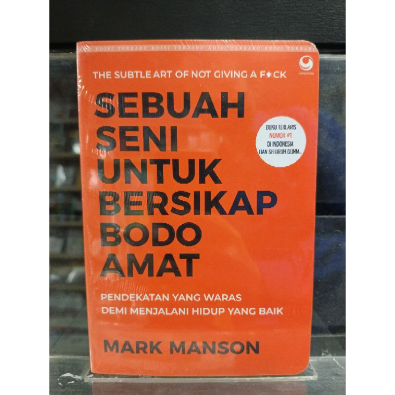

Penulis: Tere Liye | Penerbit: Gramedia | Tahun: 2014
"Apapun yang terlihat, boleh jadi tidak seperti yang terlihat. Apapun yang hilang, boleh jadi tidak benar-benar hilang."
 |
Filosofi Teras Penulis: Henry Manampiring | Penerbit: Kompas | Tahun: 2018 "Kecemasan adalah sesuatu yang kita buat sendiri melalui pikiran kita." |
 |
Atomic Habits Penulis: James Clear | Penerbit: Penguin | Tahun: 2018 "Kualitas hidup kita bergantung pada kualitas kebiasaan kita." |
 |
Hello Penulis: Tere Liye | Penerbit: Gramedia | Tahun: 2023 "Masa lalu tidak pernah pergi, dia hanya menunggu waktu yang tepat untuk menyapa." |
|
Bumi Penulis: Tere Liye | Penerbit: Gramedia | Tahun: 2014 "Apapun yang terlihat, boleh jadi tidak seperti yang terlihat. Apapun yang hilang, boleh jadi tidak benar-benar hilang." |
 |
Sebuah Seni untuk Bersikap Bodo Amat Penulis: Mark Manson | Penerbit: Grasindo | Tahun: 2016 "Kunci untuk kehidupan yang baik bukan tentang memedulikan lebih banyak hal, tapi tentang memedulikan hal yang tepat saja." |